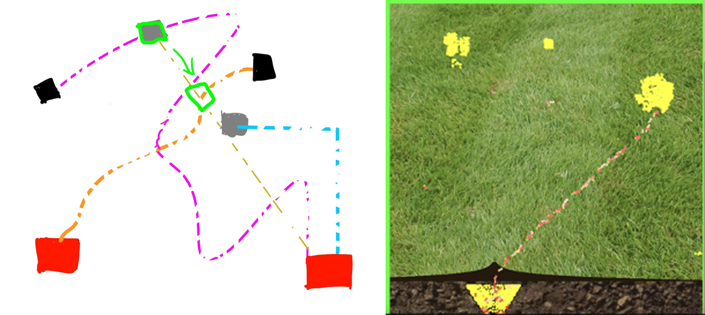
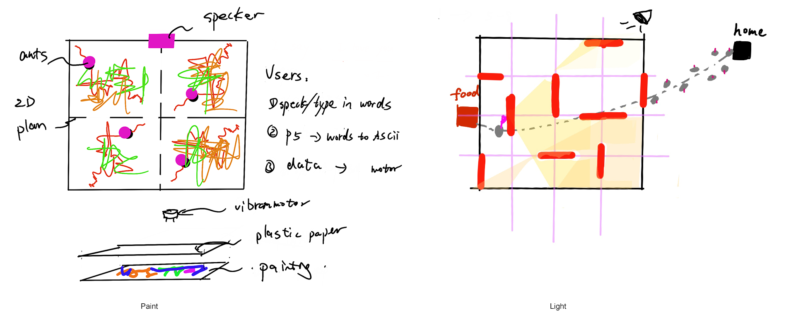
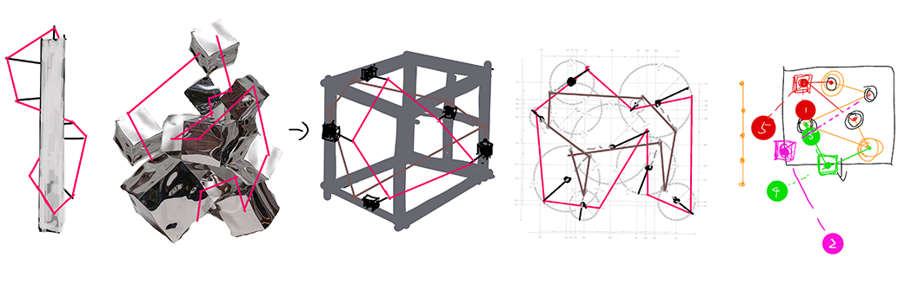
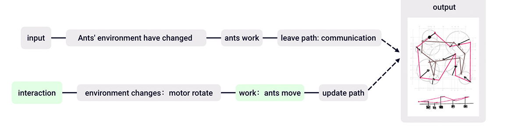
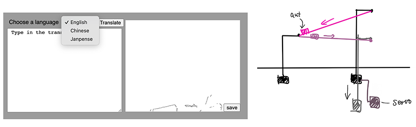

Introduction
The Ant Translator is an installation for web interaction, a special translator that converts text into images. The work relies on physical coding techniques to demonstrate how ants process complex information and how to build highly social and collaborative relationships. Ants are extremely small creatures, but they have a complex social network similar to that of human society. I was trying to use the language of ants to translate our words and regulate the human world with the rules of their microcosm and establish a new way of communication.
Concept and Background Research
As a delicate artist, I am good at observing people and things around me. I believe that the visual experience brought by images is an open-ended expression that can provoke the viewer to think and imagine, which words cannot. The logic nested in words binds these sensory cognitive abilities that are innate to humans. Visual communication is about creating cognitive and emotional "resonance" between the transmitter and the receiver. Based on my research into vision, I discovered that ants barely have eyesight but can build complex social networks. I was thus puzzled and intrigued.
I investigated the collaboration patterns of ants and found that ants transmit information and coordinate their actions by releasing chemical pheromones. The ants secrete pheromones along the way as they move, and other ants perceive the 'food' pheromones as they pass by and join the food-carrying party. That is why, if you put candy on the ground, a swarm of ants will appear within ten minutes. Pictorial information carriers have a narrative and ideographic function and have thus developed into a social symbol. Pheromones are the language of ants, and different pheromones have different meanings, thus creating an information network of ants. Their pheromone paths form images that build a visual ant colony society.
Technical Implementation
Design Process
Initially, there were many experiments with the design of path images, including paints, and light and shadow. In addition, i designed a 3D modelling to present the trails.

Workflow
In this translation webpage, each viewer can enter text and have an interactive experience. At the same time, the viewer has the option to save and upload the images to social platforms for sharing. This is an implicit way of expression in the language of pheromones. Just like ants, the pheromones are left behind to convey information about the surroundings.
In the design of the translation mechanism, the key question is how texts are translated into movement. Through experiments on the ant simulator, I found that the food variable largely impressed the shape of the trajectory. As the food increases, the trajectory changes less. Therefore, I devised two rules: Rule 1, as the user increases, the angle of change of the trajectory becomes smaller. Rule 2, the length of the text is consistent with the rate of change of the trajectory. Therefore, I applied y = k/x and y= k* x functions to change the angle and acceleration values of the motor in the translation process.
Reflection and Future Development
I am always fascinated by the intricacies of biological subjects. Moving forward, I intend to explore the development of mechanical creatures. Nature is both mysterious and beautiful, and I have been experimenting with combining computer programming with the natural world. I found that using microcosms to provoke thought about the human world was a particularly interesting approach. The interplay between the natural laws of living things and the human environment is a rich area for exploration and discovery.
Iteration
For the next generation I am planning to make it a 3D sculpture and make some 'robot' ants move around the path. In addition, I will be updating the interface of the website, including adding categories for languages and visual aesthetic optimisation.
